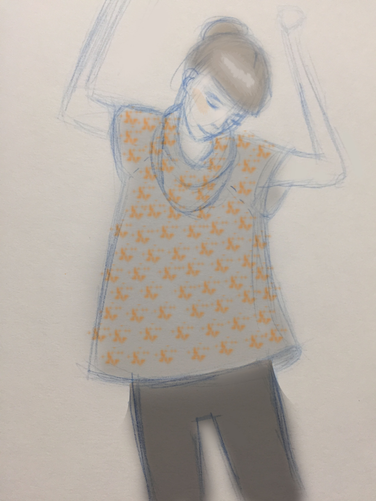
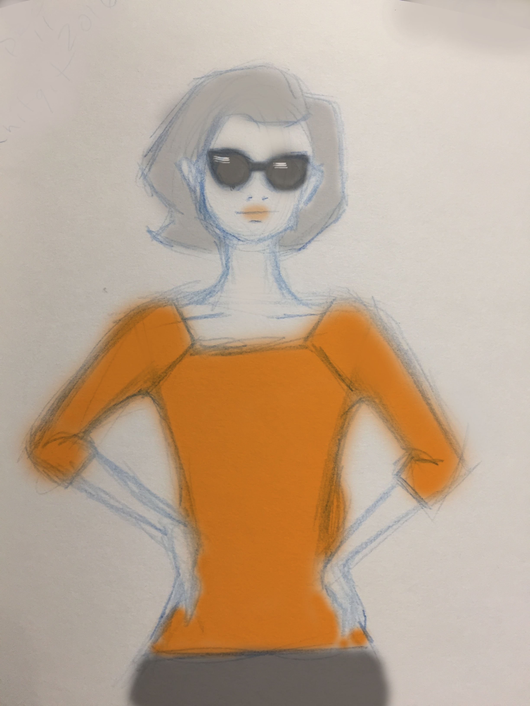
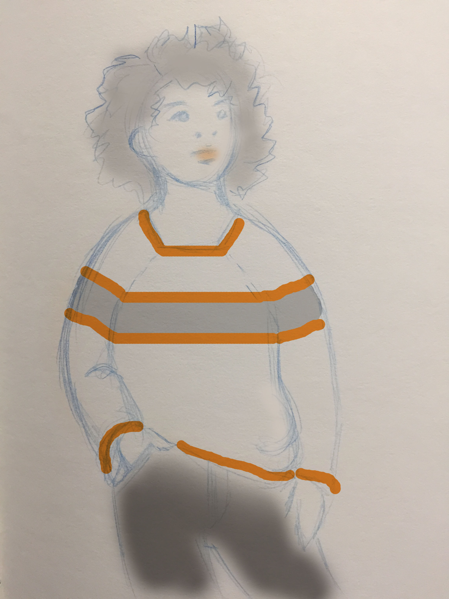
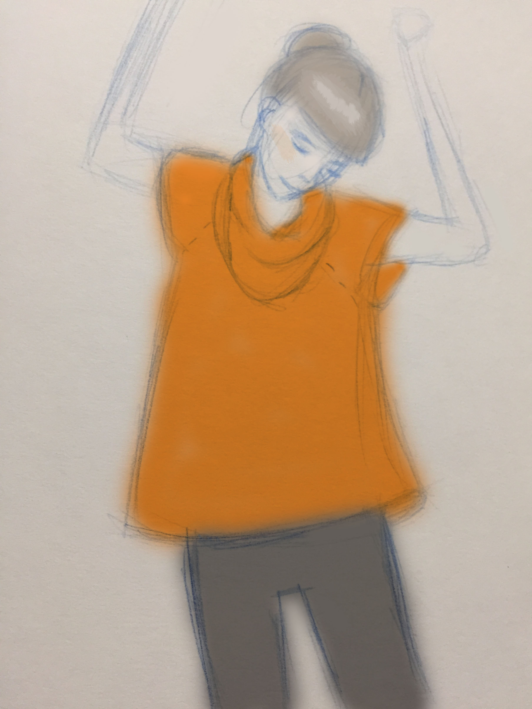
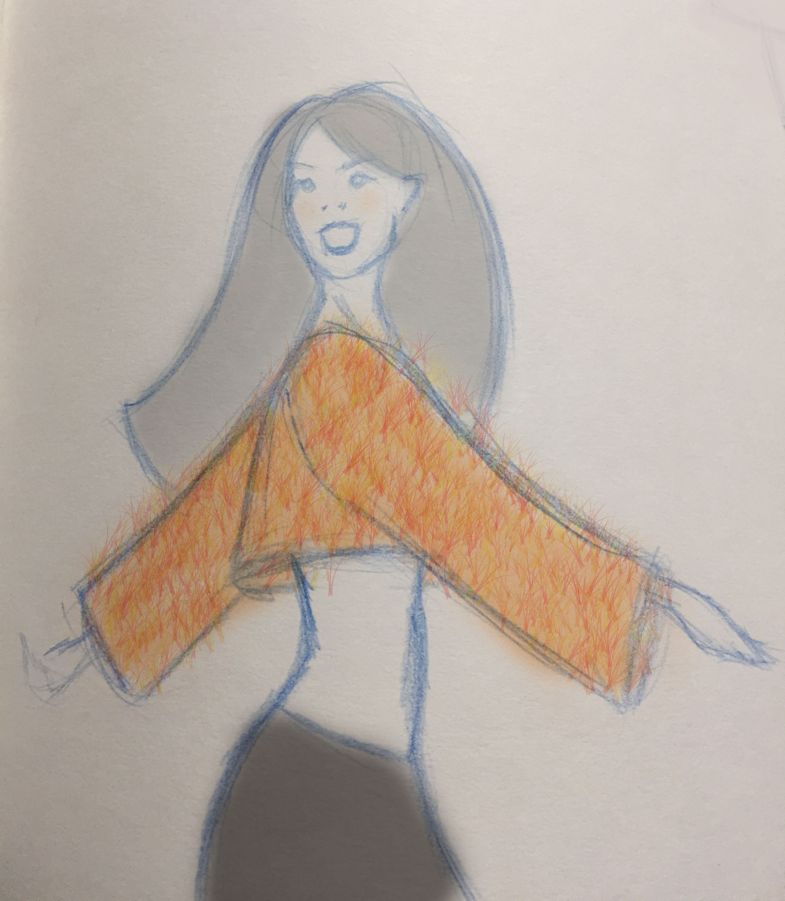
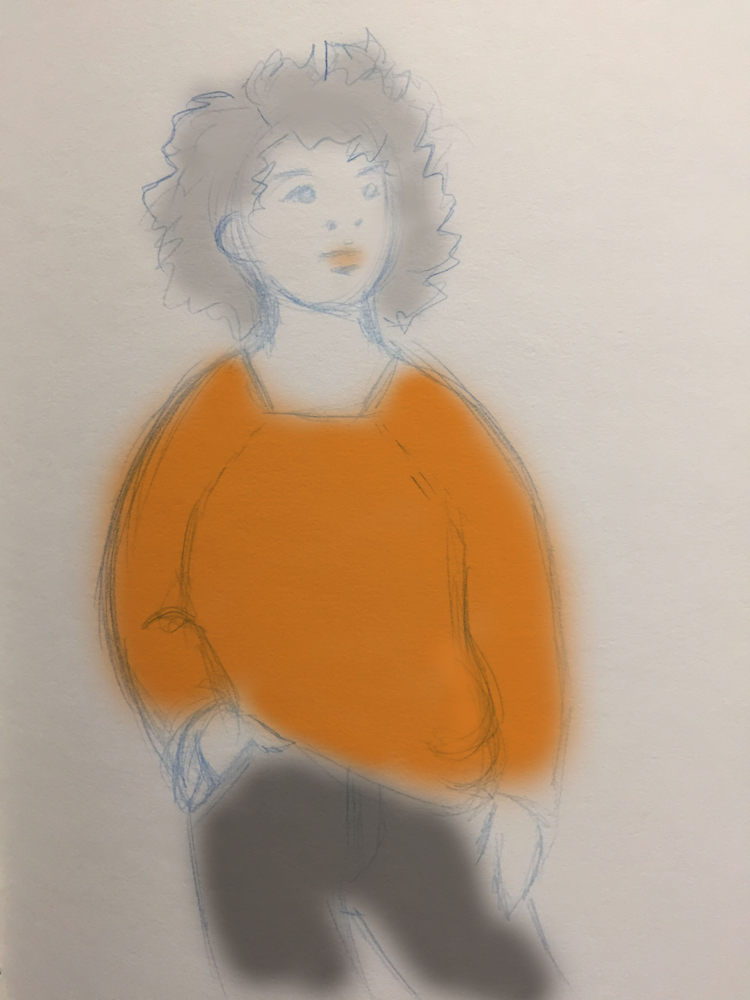
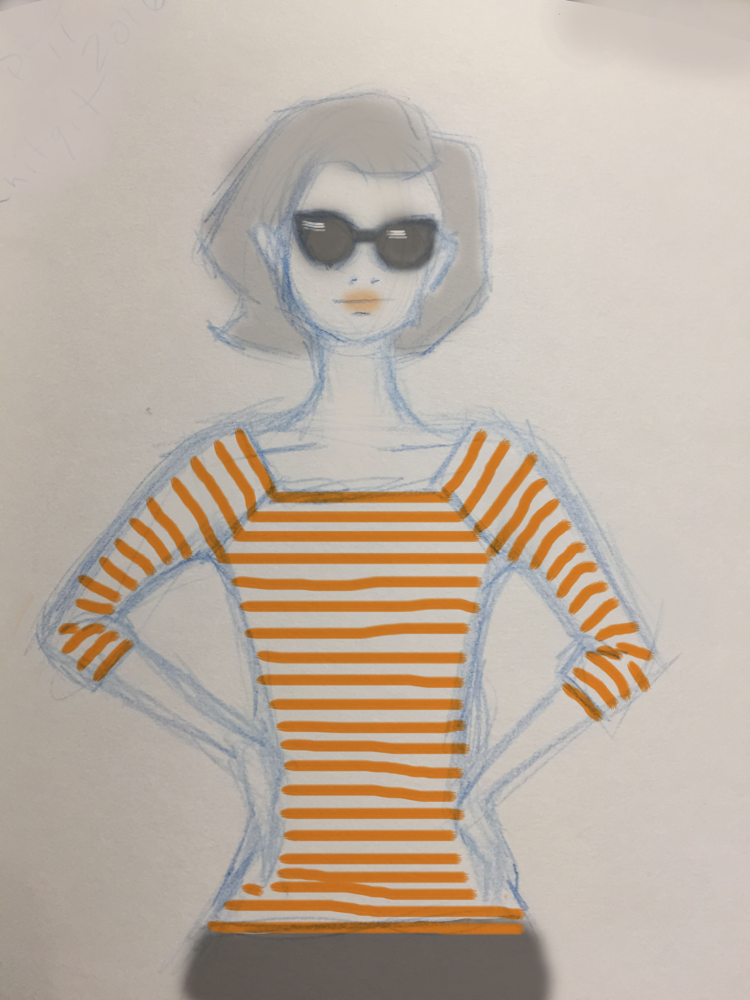
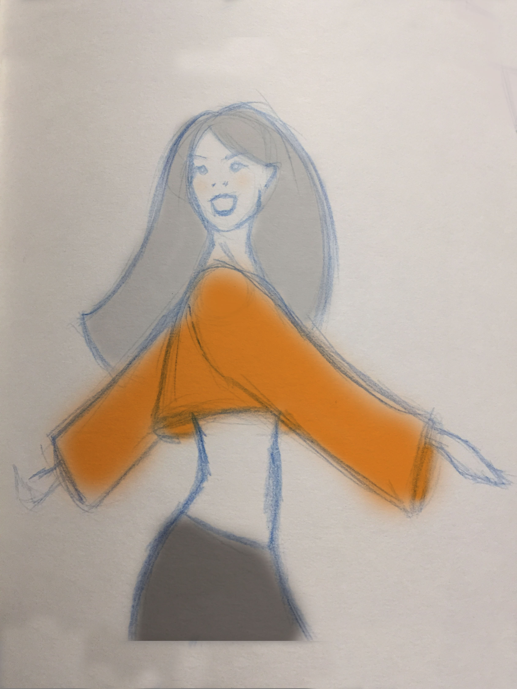

 |
 |
 |
 |
 |
 |
 |
 |
This pattern will require knitting IN THE ROUND. Make sure you have the correct needles.
The sleeves and torso on this sweater are straight cut, for simplicity.
The single most important part of any sweater is to accurately assess your gauge.
Choose your yarn, needle and pattern stitch and just play around until you find a
look you're happy with.
Knit a square that is more than 4 inches on each side. Make sure that you wash/dry/iron/block
your square to accurately reflect what your sweater fabric will size to in the end.
If your chosen pattern is too big to fit within this 4 inch square,
it is not a good fit for this project, as it won't have a repeatable gauge.
And now that you're REALLY ready to lock in your gauge for this project,
meausure 4 inches across and count the number of stitches that fit in that space.
This is your GAUGE - STITCHES for the form below. (Please enter a whole number only)
Now measure 4 inches up and down and count the number of rows that fit in that space.
This is your GAUGE - ROWS for the form below. (Please enter a whole number only)
Now you need to decide the length of the torso (body) of your sweater.
Cropped or tunic?
Please note the measurement we need here is not quite the 'normal' way to measure
the length of the top (from neck to hem.) For this project you need to determine the
length from the hem of the sweater, up to where it will meet the sleeve (see image above.)
Bear in mind, a wide/loose measurement (coming up next!) will indirectly affect the length
here as well. Best bet is to find a sweater/top with the fit you want and measure right
off of that (rather than trying to take a body measurement.)
Choose your measuement and enter it under Torso -length.
Now you need to decide the width of the torso (body) of your sweater.
Snug or loose?
Make sure to measure the full circumference around the chest measuremt
(not just one way across.)
Again it is recommended to measure off of a sweater or top with the right fit,
and not just abody measurement.
Choose your measurement and enter it under Torso - width.
Now you need to decide the length of the sleeve of your sweater.
Long? Half? Cap?
Once again this is not a 'normal' sleeve measurement (shoulder to cuff.)
For this project you will measure on the BOTTOM of the sleeve, from the
cuff up to wear it will connect at the armhole to the torso of the sweater.
(see image above.)
Bear in mind, a wide/loose measurement (above - width) will indirectly affect the length.
Again it is recommended to measure off of a sweater or top with the right fit,
and not just a body measurement.
Choose your measurement and enter it under Sleeve - length.